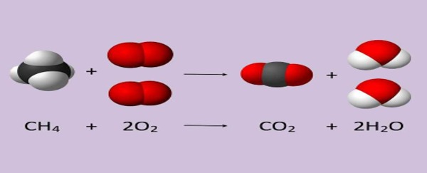

Quimica General
estequiometría
Introducción
La estequiometría es la rama de la química que se centra en los cálculos cuantitativos entre reacciones químicas. En general consiste en sacar masa obtenida de producto o cantidad necesaria de reactivo. Es algo básico para la especialidad que se usa en casi todas las materias aunque sea un poco, sobre todo se ve en química general, química analítica cualitativa y química analítica cuantitativa.
Teoría
Conceptos Claves
- Previamente mencionados:Los conceptos de mol y peso molecular están también en estequiometría como en otras ramas
- Producto y reactivo: El reactivo crea al producto. Esto se puede dar de más de una manera, ya sea composición, una suma de reactivos, o por descomposición, lo opuesto.
- Ecuación de reacción: La ecuación de reacción es el primer paso en cualquier problema estequiométrico y consiste en primero plantear la reacción con los reactivos y productos. Un buen ejemplo sería este:

Esta es una reacción de combustión entre metano y oxígeno que da dióxido de carbono y agua. El hecho de que el metano más oxígeno produce dióxido de carbono y agua al igual que todos los productos de las reacciones suelen ser datos teóricos que generalmente dan en los ejercicios. También se puede ver que el oxígeno y el agua tienen un dos adelante, a esos números se les llama coeficientes estequiométricos. No afectan el cómo se les nombra a los productos, pero en la ecuación de reacción de ser necesario deben estar sí o sí. Son fundamentales para realizar el balance de ecuación, el cual se basa en que la cantidad de átomos que reaccionan es la misma que la que quedan como productos. En el gráfico de arriba reaccionan 4 átomos de hidrógeno pero pasan solo 2, entonces para que queden iguales se multiplica al agua por 2. Los oxígenos también se ven duplicados por lo que de reactivos de oxígeno hay 2 y de productos hay 4 por lo que se multiplica por 2 al oxígeno y ahí sí queda la ecuación balanceada. No es necesario empezar por los hidrógenos, se comienza por el que le parezca más fácil a cada uno.
Tipos de reacciones:
También hay que estar atento a cómo se colocan las flechas de reacción. En la imagen de abajo se puede ver que están las palabras calor, temperatura ambiental y electricidad. Indican con que se dio la reacción, casi siempre con poner el símbolo de calor es suficiente y a veces ni siquiera es necesario no se ponen.
También pueden variar la forma que tienen de reaccionar:

En este otro gráfico se explica que con doble se indica que los productos pueden reaccionar entre sí y formar los reactivos, generando un ciclo en el cualquiera puede ser reactivo o producto. No afecta al balance de ecuación:
 Relaciones estequiométricas: En una ecuación de reacción siempre va a haber de estas. La más obvia es que la cantidad de reactivo va influir en la cantidad de producto. Pero los reactivos entre sí también se relacionan y de ahí sale el concepto de reactivo limitante y reactivo en exceso, concepto clave para todo ejercicio de estequiometría. Las relaciones pueden ser de gramos, moles o cualquier otra unidad que requiera el ejercicio. Su razonamiento es que si un reactivo produce cierta cantidad o el otro deberá producir una cantidad relacionada. Por Ejemplo: Si se producen 20 g de 2H2O ¿Cuántos se producirán de 4CO2?, se hace regla de 3 simple:
Relaciones estequiométricas: En una ecuación de reacción siempre va a haber de estas. La más obvia es que la cantidad de reactivo va influir en la cantidad de producto. Pero los reactivos entre sí también se relacionan y de ahí sale el concepto de reactivo limitante y reactivo en exceso, concepto clave para todo ejercicio de estequiometría. Las relaciones pueden ser de gramos, moles o cualquier otra unidad que requiera el ejercicio. Su razonamiento es que si un reactivo produce cierta cantidad o el otro deberá producir una cantidad relacionada. Por Ejemplo: Si se producen 20 g de 2H2O ¿Cuántos se producirán de 4CO2?, se hace regla de 3 simple:
2 moléculas de H2O--->20g
4 moléculas de CO2--->10g
Reactivo limitante y en exceso: Ya terminada la ecuación de reacción con su respectivo balance se debe identificar a estos dos reactivos. Para toda reacción se necesita una cantidad mínima de reactivo para que se forme, el reactivo que tenga menor cantidad será el reactivo limitante y viceversa. Esto se puede ver en la siguientes relaciones:
- Cantidad necesaria < Cant. que se tiene: Reactivo en exceso
- Cantidad necesaria > Cant. que se tiene: Reactivo limitante
Esos datos son pilares para el resto de relaciones estequiométricas.
Pureza
La pureza es lo que indica que tan libre de impurezas está una sustancia química, se utiliza la unidad gramos. Para sacarla se utiliza la siguiente fórmula expresada en regla de 3 simple:
100%--- Masa de reactivo
%Pureza---Masa real de reactivo
La masa del reactivo es la que se saca normalmente, la real suele ser la incógnita o un dato del ejercicio.
Rendimiento:
Siempre se pierde un poco de producto por diversos factores, así que se indica que tan efectiva fue la obtención del mismo, también se utilizan los gramos. Para sacarlo se utiliza la siguiente fórmula expresada en regla de 3 simple.
(Rendimiento real/rendimiento teórico) x 100= %Rendimiento
El rendimiento teórico sería la masa del producto y el real un dato teórico.